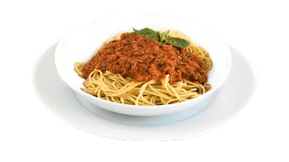
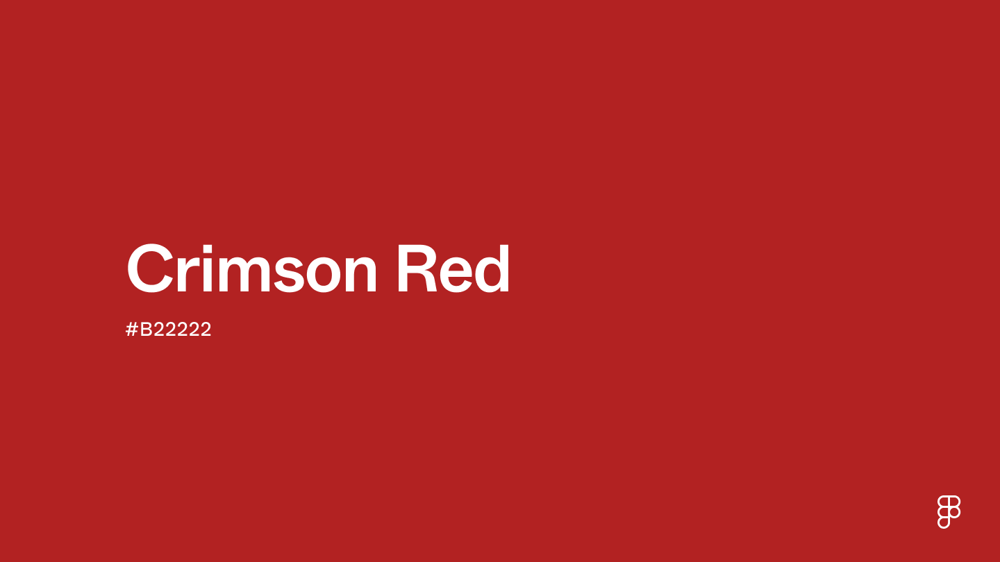

Favorite Food
As someone with Italian heritage, it is impossible for me not to love spaghetti. There are many ways to prepare this spectacular noodle dish, but I generally just preffer the classic spaghetti and home made meatballs.
Favorite Zoo Animal

My favorite zoo animal would have to be wolves. It is a beaty to see that more and more zoos are adding sanctuaries for wolves to combat the species endangerment. As wolves are what made man's best friend, it should be our job to keep that connection strong.
Crimson
Crimson is a combination of the colors red and rose on the color wheel, its hex code being #B222222 It is said that this color is often associated with the feelings of passion or love, but can also be associated with malevolent things such as revenge and anger.